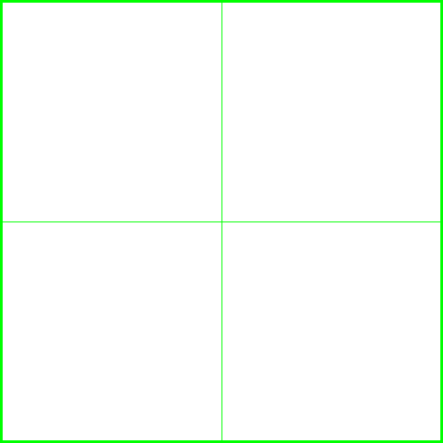
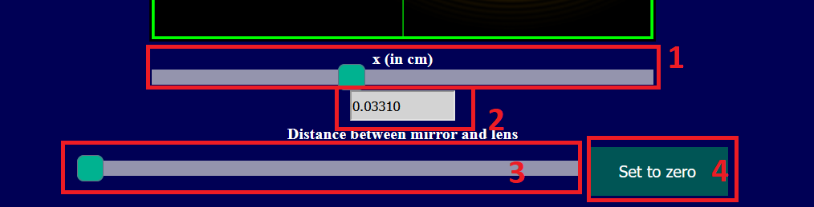

Newton's Ring
Your browser does not support the HTML5 canvas tag.e" width="800" align="center" id="tele" class="tele"/> 
x (in cm)
Distance between mirror and lens
Set to zero
×
Instructions
1st slider to move the microscope along X axis. (
1
)
Text box to read the value of slider 1. It can be used for fine adjustment.(
2
)
2nd slider to adjust the separation between the mirror and the lens. (
3
)
Click the button "set to zero" to set the second slider to zero. (
4
)
To observe the continious variation, just click on the slider button and the use up/down key of the keyboard.
